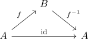
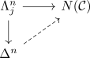
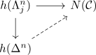
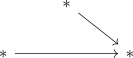
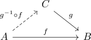
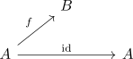

nerve of a category as kan complex and groupoid
Proposition
Let $\mathcal{C}$ be a category
TFAE:
- $\mathcal{C}$ is a groupoid
- the nerve is a Kan complex.
Proof
1) $\implies$ 2)
a)
infinity-groupoid and Kan complex For a \(1\)-simplex $f \in N(\mathcal{C})$ consider

b)
Given an extension problem of a horn:

this corresponds to

(cf. bijection of extension problems for an adjunction, nerve functor as right adjoint)
$n \geq 3, n = 1$
follows from homotopy category of a horn, where $h(\Lambda_j^n) \rightarrow h(\Delta^n)$ is an isomorphism
$n = 2, j = 1$
see:
$n = 2, j = 2$
Here the homotopy category of the horn is given by

and for

suffices as a lift
$n = 2, j = 0$
follows analogously to $j = 2$
2) $\implies$ 1)
Given a morphism $f: A \rightarrow B \in \mathrm{Mor}(\mathcal{C})$ consider the horn

Then a lift provides a left-inverse $f^{-1}$. By repeating this argument and lifting inverse and isomorphism we conclude that $f$ is an isomorphism